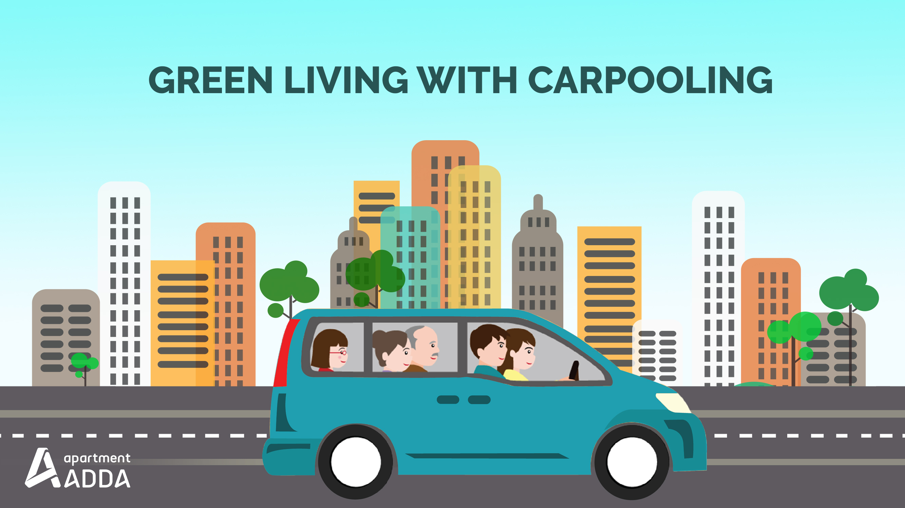

Critiques
Carpooling (also car-sharing, ride-sharing and lift-sharing) is the sharing of car journeys so that more than one person travels in a car, and prevents the need for others to have to drive to a location themselves. By having more people using one vehicle, carpooling reduces each person's travel costs such as: fuel costs, tolls, and the stress of driving. Carpooling is also a more environmentally friendly and sustainable way to travel as sharing journeys reduces air pollution, carbon emissions, traffic congestion on the roads, and the need for parking spaces. Authorities often encourage carpooling, especially during periods of high pollution or high fuel prices. Car sharing is a good way to use up the full seating capacity of a car, which would otherwise remain unused if it were just the driver using the car. In 2009, carpooling represented 43.5% of all trips in the United States and 10% of commute trips. The majority of carpool commutes (over 60%) are "fam-pools" with family members.